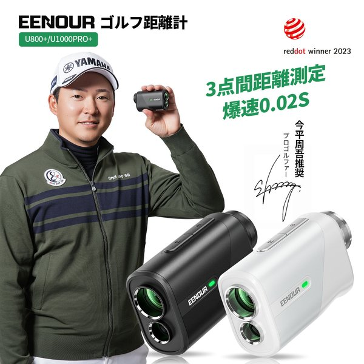
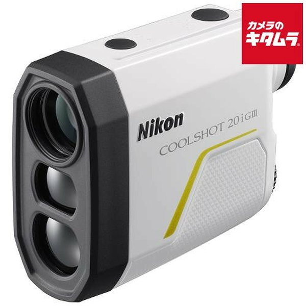
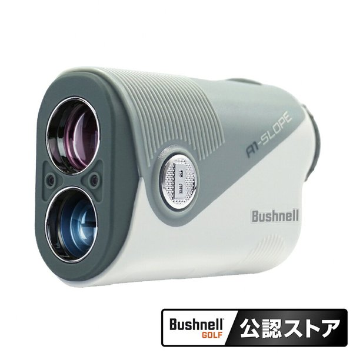
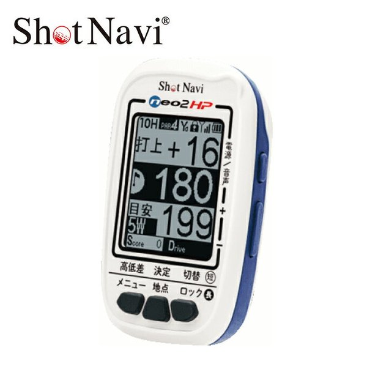
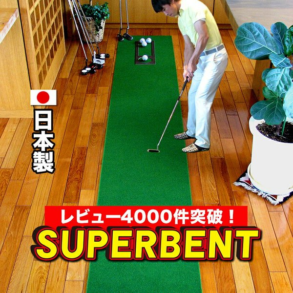
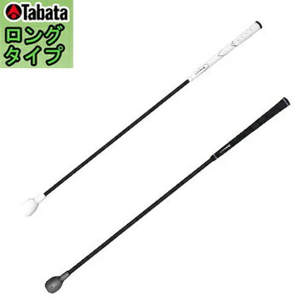
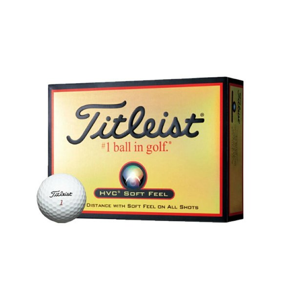
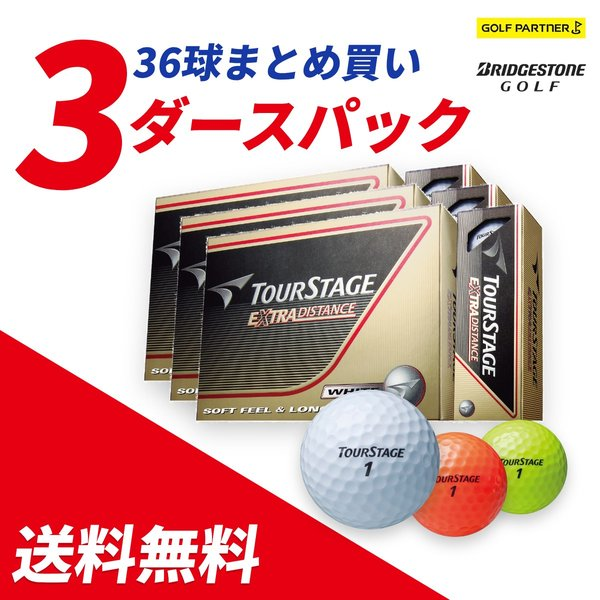
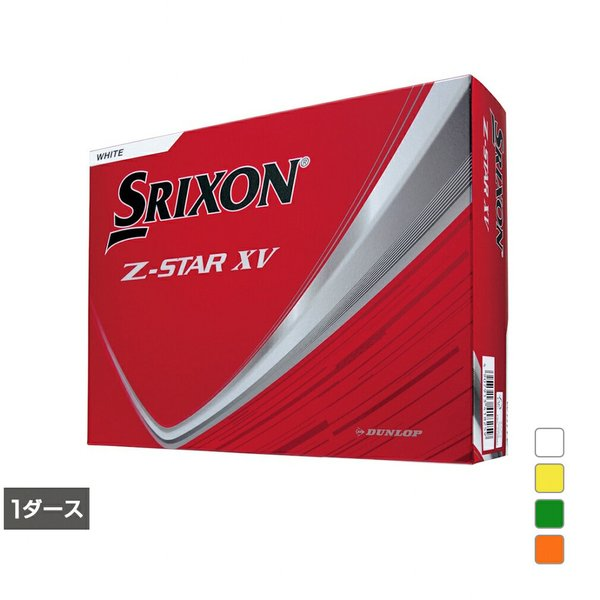
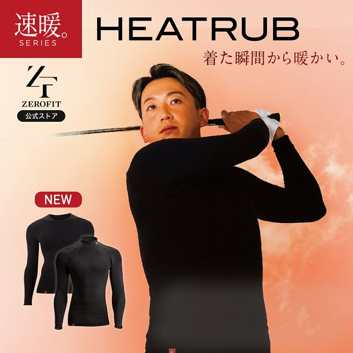

【2026年・ブラックフライデー】ゴルフ練習・レーザー距離計・パターマット・冬の防寒10選｜EENOUR・ニコン・ブッシュネル・ショットナビ・パターマット工房・タバタ・タイトリスト・ブリヂストン・スリクソン・ゼロフィットを実売価格で比較
ゴルフは、道具を1つ替えるだけで練習の質が変わります。距離計があれば番手選びで迷わず、パターマットがあれば自宅で毎日転がせます。冬のラウンドは、防寒を1枚足すだけで体の動きが変わります。
選ぶ軸は3つです。「まずコースで使う道具か、家で使う道具か」。距離計とボールはコース、パターマットと素振り器具は家が主な舞台です。「次に測り方」。GPSナビはコースに出るだけで距離が出て、レーザー距離計はピンに直接当てて測ります。「最後に冬の装い」。速暖インナーとネックウォーマーは、重ね着を増やさずに暖かさを足せます。なお、レビュー件数が50件に満たない商品は記事内に実数を明記しています。
本記事では、楽天市場で人気・高評価のゴルフ練習・距離計・冬支度グッズ10選を、実売価格とレビュー評価つきで写真付き紹介します。
- おすすめ10選 スペック・特徴比較表
- BEST 1｜EENOUR ゴルフレーザー距離計 3点間測定
- BEST 2｜ニコン ゴルフ用レーザー距離計 COOLSHOT 20i GIII
- BEST 3｜ブッシュネル ピンシーカーA1スロープジョルト
- BEST 4｜ショットナビ neo2 HP GPSゴルフナビ
- BEST 5｜パターマット工房 スーパーベントパターマット 45cm×3m
- BEST 6｜タバタ トルネードスティック ロングタイプ GV0231L
- BEST 7｜タイトリスト HVCソフトフィール 1ダース
- BEST 8｜ブリヂストン ツアーステージ エクストラディスタンス 3ダース
- BEST 9｜スリクソン Z-STAR XV9 1ダース
- BEST 10｜ゼロフィット ヒートラブ モックネック
- 【読者負担0円】買わなくても得する無料サービス
- まとめ：ゴルフ練習・距離計・冬支度10選の選び方
| 順位 | 商品名 | ブランド | 最大の特徴・おすすめ理由 | 総合評価 |
|---|---|---|---|---|
| BEST 1 | EENOUR ゴルフレーザー距離計 3点間測定 | EENOUR（イーノウ） | 3点間測定で高低差込みの距離がわかる | 4.69 |
| BEST 2 | ニコン ゴルフ用レーザー距離計 COOLSHOT 20i GIII | ニコン（Nikon） | 光学メーカー製でファインダーが見やすい | 4.00 |
| BEST 3 | ブッシュネル ピンシーカーA1スロープジョルト | ブッシュネル（Bushnell） | スロープ機能で打つべき距離がわかる | 4.00 |
| BEST 4 | ショットナビ neo2 HP GPSゴルフナビ | ショットナビ（Shot Navi） | コースに出るだけで距離が表示される | 4.19 |
| BEST 5 | パターマット工房 スーパーベントパターマット 45cm×3m | パターマット工房 | 日本製で転がりが安定している | 4.63 |
| BEST 6 | タバタ トルネードスティック ロングタイプ GV0231L | タバタ（Tabata） | ボールなしで素振りできる | 4.37 |
| BEST 7 | タイトリスト HVCソフトフィール 1ダース | タイトリスト（Titleist） | やわらかい打感で扱いやすい | 4.58 |
| BEST 8 | ブリヂストン ツアーステージ エクストラディスタンス 3ダース | ブリヂストン（BRIDGESTONE GOLF） | 36球のまとめ買いで割安 | 4.54 |
| BEST 9 | スリクソン Z-STAR XV9 1ダース | スリクソン（SRIXON） | グリーンで止めやすいツアーモデル | 4.66 |
| BEST 10 | ゼロフィット ヒートラブ モックネック | ゼロフィット（ZEROFIT） | 速暖素材で冬の朝のラウンドが楽になる | 4.72 |
EENOUR ゴルフレーザー距離計 3点間測定

EENOURのゴルフレーザー距離計は、ピンまでの距離に高低差を加えた3点間測定に対応したモデルです。手のひらに収まるコンパクトなボディで、カートに載せたままでも扱いやすく、初めて距離計を持つ人にも向いています。楽天市場での実売価格は約11,980円（2026年11月時点）。
- 3点間測定で高低差込みの距離がわかる
- コンパクトで持ち運びやすい
- レビュー4,767件で評価4.69
- 上位モデルの手ブレ補正までは備えていないので、長い距離を測るときは両手で構える
ニコン ゴルフ用レーザー距離計 COOLSHOT 20i GIII

ニコンのCOOLSHOT 20i GIIIは、光学機器を作ってきたニコンのゴルフ用レーザー距離計です。ファインダーをのぞいてピンに合わせ、ボタンを押すと距離が表示されます。価格は2万円台で、国産メーカーの距離計を試したい人の選択肢になります。楽天市場での実売価格は約23,977円（2026年11月時点）。
- 光学メーカー製でファインダーが見やすい
- のぞいて押すだけの操作
- 国内正規品で安心して使える
- レビューは3件とまだ少なく、長く使った評価はこれから
ブッシュネル ピンシーカーA1スロープジョルト

ブッシュネルのピンシーカーA1スロープジョルトは、ピンまでの距離と高低差から打つべき距離を計算するスロープ機能付きのレーザー距離計です。オリーブの落ち着いたカラーで、距離計を作り続けてきたメーカーの定番シリーズにあたります。楽天市場での実売価格は約29,800円（2026年11月時点）。
- スロープ機能で打つべき距離がわかる
- オリーブの落ち着いたカラー
- 距離計の定番シリーズ
- レビューは3件と少なく、購入前は実機の表示を店頭で確かめたい
ショットナビ neo2 HP GPSゴルフナビ

ショットナビのneo2 HPは、手のひらサイズのGPSゴルフナビです。コースに出て電源を入れると、現在地とグリーンまでの距離が画面に表示されます。ボタン操作だけで使えるので、スマホのアプリに慣れていない人にも扱いやすい機器です。楽天市場での実売価格は約9,989円（2026年11月時点）。
- コースに出るだけで距離が表示される
- 測る手間がいらない
- 画面が大きく見やすい
- レビューは48件で、レーザー距離計に比べると口コミは多くない
パターマット工房 スーパーベントパターマット 45cm×3m

パターマット工房のスーパーベントパターマットは、パット練習用マットの専門工房が作る日本製のロングマットです。45cm幅で3mの長さがあり、距離感マスターカップが付いて、転がる距離を体で覚えられます。リビングでも廊下でも敷けるサイズです。楽天市場での実売価格は約4,680円（2026年11月時点）。
- 日本製で転がりが安定している
- 3mの長さで距離感を練習できる
- 距離感マスターカップ付き
- 3mをまっすぐ敷ける場所が必要で、畳むと折り目が残りやすい
タバタ トルネードスティック ロングタイプ GV0231L

タバタのトルネードスティックは、シャフトのしなりを生かして素振りするスイング練習器具です。ロングタイプはドライバーに近い長さで、振り切ったときのヘッドの軌道を確かめられます。ボールを打たずに、自宅の庭でも室内でも振れます。楽天市場での実売価格は約3,140円（2026年11月時点）。
- ボールなしで素振りできる
- ドライバーに近い長さで振りを確認できる
- 軽くて持ち運びやすい
- しなりを意識して振る器具なので、当てにいくスイングの矯正には向かない
タイトリスト HVCソフトフィール 1ダース

タイトリストのHVCソフトフィールは、やわらかい打感が特長のスタンダードボールです。1ダース12球入りで、コンペの参加賞や仲間内のラウンドにも配りやすい定番にあたります。飛距離を優先する人より、打感のやさしさを求める人に向いています。楽天市場での実売価格は約2,190円（2026年11月時点）。
- やわらかい打感で扱いやすい
- 12球入りの1ダース
- コンペや仲間内の定番
- スピン性能はツアーモデルに劣るので、グリーンで止めたい人には向かない
ブリヂストン ツアーステージ エクストラディスタンス 3ダース

ブリヂストンのツアーステージ エクストラディスタンスは、飛距離を狙うスタンダードボールです。3ダース36球のまとめ買いセットなので、月に何度もラウンドする人のストックに向いています。ディスタンス系ながら、アイアンでの打感も硬すぎません。楽天市場での実売価格は約3,980円（2026年11月時点）。
- 36球のまとめ買いで割安
- 飛距離を狙うディスタンス系
- コンペの景品にも使える本数
- 3ダースは保管場所を取るので、ラウンドの予定を決めてから買う
スリクソン Z-STAR XV9 1ダース

スリクソンのZ-STAR XV9は、ツアーでも使われる上位モデルのゴルフボールです。打ち込んだときにスピンがかかり、グリーンで止めやすい設計で、ヘッドスピードの速い人に向いています。1ダース12球入りで、コンペの上位賞にも合うボールです。楽天市場での実売価格は約4,948円（2026年11月時点）。
- グリーンで止めやすいツアーモデル
- 1ダース単位で買い足せる
- 競技志向のラウンドに合う
- レビューは29件で少なく、硬めの打感は好みが分かれる
ゼロフィット ヒートラブ モックネック

ゼロフィットのヒートラブは、着た瞬間に暖かさを感じる冬用のインナーです。モックネックなので首元まで覆え、上にシャツを重ねても着ぶくれしにくい薄さに仕上げています。冬のラウンドで、冷たい風が体に伝わるのを抑えたい人に向いています。楽天市場での実売価格は約12,100円（2026年11月時点）。
- 速暖素材で冬の朝のラウンドが楽になる
- モックネックで首元まで暖かい
- 薄手で重ね着しやすい
- 価格が1万円を超えるので、まずは1枚から試す
この記事の商品を買う前に、まずは無料で得する選択肢をチェック。どれも登録・利用は0円で、無料期間中に解約すれば料金はかかりません。読みたい雑誌がある人、ポイントを貯めたい人、アンケートなら気軽という人、それぞれに合うものを選べます。
初回31日無料・無料期間中に解約すれば0円 → 楽天ポイントモール｜登録無料で毎日ポイ活
買い物なしでもポイントが貯まる無料サービス → 楽天インサイト｜アンケートに答えてポイント
登録無料・すきま時間のアンケートで貯まる → 楽天カード｜年会費永年無料
新規発行・年会費ずっと0円 →
4つのサービスの違いと使い分けは「出費0円で得する！買わずにポイントが貯まる無料サービス厳選4選」でまとめています。
💡 まとめ：ゴルフ練習・距離計・冬支度10選の選び方
距離計は、コースで手早く測りたいならEENOURやショットナビ、ピンに直接当てたいならニコンやブッシュネルが向きます。練習道具は、パターマット工房の3mマットとタバタのトルネードスティックを1本ずつ。ボールはコンペ用にタイトリスト、普段使いにブリヂストンの3ダース、競技志向ならスリクソン。冬のラウンドはゼロフィットの速暖インナーを1枚足すと、厚着せずに体が動きます。
楽天市場では「5と0のつく日」や「お買い物マラソン」などのキャンペーンに合わせて購入すると、ポイント還元が最大化してお得に手に入ります。ぜひチェックしてみてくださいね。